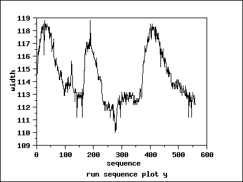
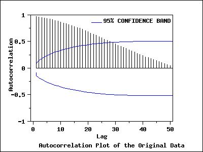
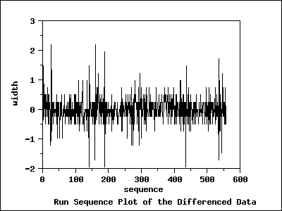
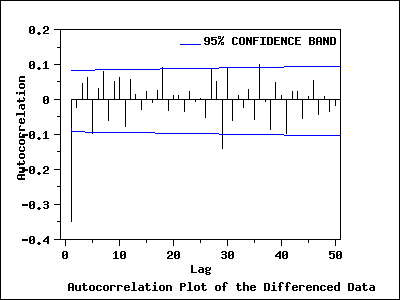
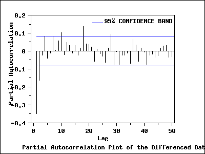

|
6.
Process or Product Monitoring and Control
6.6. Case Studies in Process Monitoring 6.6.2. Aerosol Particle Size
|
|||
| Check for Stationarity, Outliers, Seasonality |
The first step in the analysis is to generate a
run sequence
plot of the response variable. A run sequence plot can indicate
stationarity
(i.e., constant location and scale), the presence of outliers, and
seasonal patterns.
Non-stationarity can often be removed by differencing the data or fitting some type of trend curve. We would then attempt to fit a Box-Jenkins model to the differenced data or to the residuals after fitting a trend curve. Although Box-Jenkins models can estimate seasonal components, the analyst needs to specify the seasonal period (for example, 12 for monthly data). Seasonal components are common for economic time series. They are less common for engineering and scientific data. |
||
| Run Sequence Plot |  | ||
| Interpretation of the Run Sequence Plot |
We can make the following conclusions from the run sequence plot.
|
||
| Autocorrelation Plot |  | ||
| Interpretation of the Autocorrelation Plot |
The autocorrelation plot has a
95% confidence band,
which is constructed based on the assumption that the process is a
moving average process. The autocorrelation plot shows that the sample
autocorrelations are very strong and positive and decay very slowly.
The autocorrelation plot indicates that the process is non-stationary and suggests an ARIMA model. The next step is to difference the data. |
||
| Run Sequence Plot of Differenced Data |  | ||
| Interpretation of the Run Sequence Plot |
The run sequence plot of the differenced data shows that the mean
of the differenced data is around zero, with the differenced data
less autocorrelated than the original data.
The next step is to examine the sample autocorrelations of the differenced data. |
||
| Autocorrelation Plot of the Differenced Data |  | ||
| Interpretation of the Autocorrelation Plot of the Differenced Data |
The autocorrelation plot of the differenced data with a 95% confidence
band shows that only the autocorrelation at lag 1 is significant.
The autocorrelation plot together with run sequence of the differenced
data suggest that the differenced data are stationary. Based on the
autocorrelation plot, an MA(1) model is suggested for the differenced
data.
To examine other possible models, we produce the partial autocorrelation plot of the differenced data. |
||
| Partial Autocorrelation Plot of the Differenced Data |  | ||
| Interpretation of the Partial Autocorrelation Plot of the Differenced Data | The partial autocorrelation plot of the differenced data with 95% confidence bands shows that only the partial autocorrelations of the first and second lag are significant. This suggests an AR(2) model for the differenced data. | ||
| Akaike Information Criterion (AIC and AICC) |
Information-based criteria, such as the AIC or AICC (see
Brockwell and Davis (2002),
pp. 171-174), can be used to automate the choice of an appropriate
model. Many software programs for time series analysis will
generate the AIC or AICC for a broad range of models.
Whatever method is used for model identification, model diagnostics should be performed on the selected model. Based on the plots in this section, we will examine the ARIMA(2,1,0) and ARIMA(0,1,1) models in detail. |
||